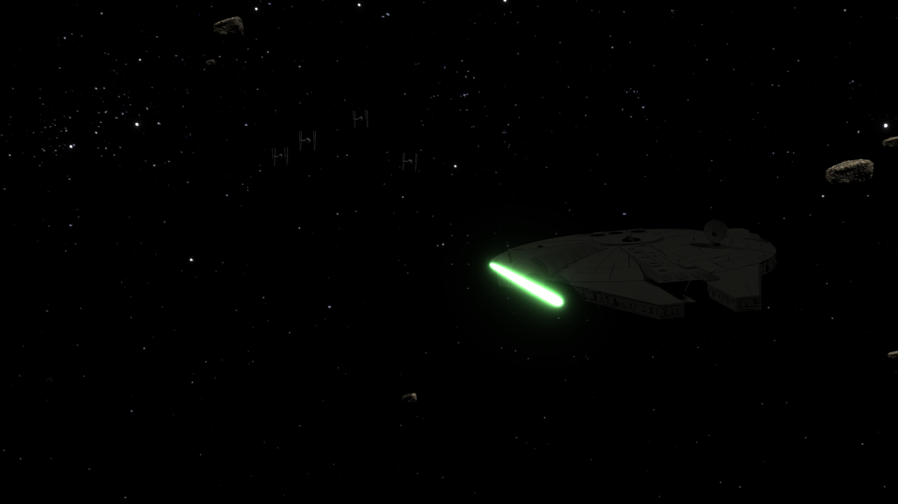
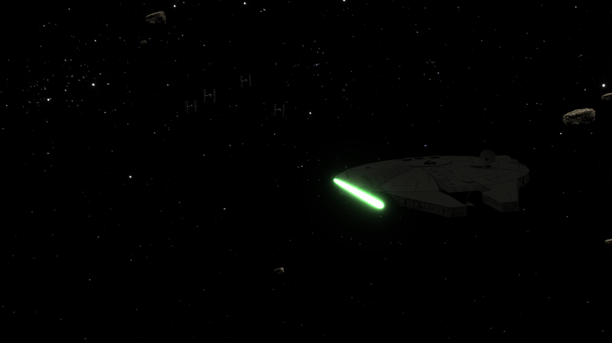
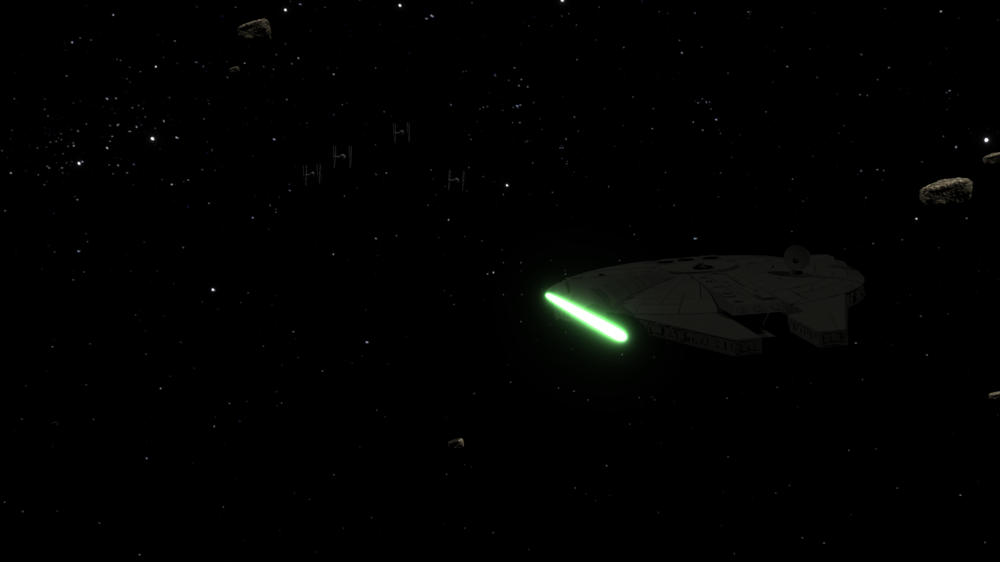

Frames / Stills

 

The Millennium Falcon is being chased by TIE fighters while its hyperdrive is charging or being repaired. With its blasters offline, the Falcon flies into an asteroid field to try to lose the pursuing ships, narrowly avoiding impacts before making a last-second escape.

I spent a significant amount of time on this project, roughly estimated between 30 and 50 hours total. About half of that time went into modeling the Millennium Falcon, along with building and texturing the asteroid field. The remaining time was focused on lighting, physics, animation, rendering, and post-processing.
Rendering took a long time due to output issues, which required multiple full re-renders. I also spent approximately 3–4 hours on additional post-processing work, especially audio, to make the final result feel more cinematic and complete.
I apologize for turning this project in slightly late. I had to return home during the final phase, and rendering took longer than expected due to technical issues that required multiple re-renders.
I also used one online model (a TIE fighter) because I ran out of time to model and texture every asset from scratch. I spent a large amount of time on the Millennium Falcon and wanted to prioritize its quality.
I have genuinely enjoyed this class, especially this project. I love Star Wars, and getting to fully realize this idea was extremely fun and rewarding.